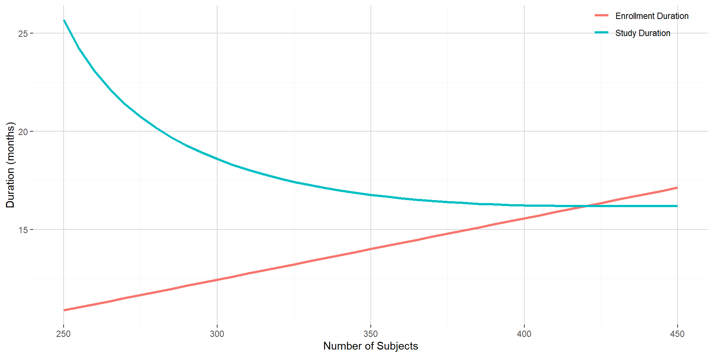
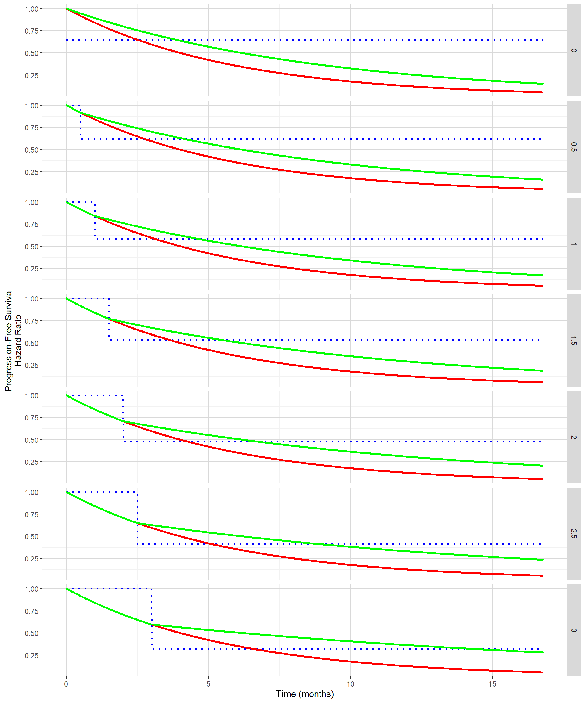
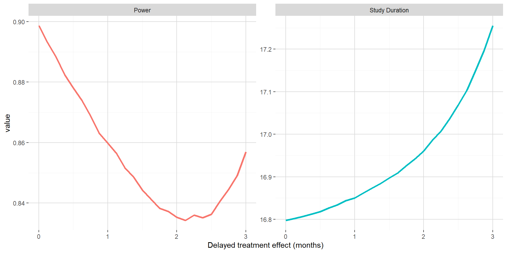

Delayed treatment effect in time-to-event endpoint
Immuno-oncology treatment candidates like immune checkpoint inhibitors and T cell therapies are rising fundamental challenges when designing and analyzing clinical trial data.
In the context of analysis of time-to-event endpoints like progression-free survival or overall survival (see definition in U.S. Food & Drug Administration - Center for Drug Evaluation and Research (2018) for definitions), manufacturing processes and/or mode of action can induce latency in the exhibition of the treatment effect. This delayed treatment effect phenomenon triggers the violation of the proportional hazard (Chen 2013) which is a standard assumption when analyzing time-to-event data.
In this blog post, the consequence of delayed treatment effect will be evaluated on the power and other operational characteristics in a fixed design and in presence of a futility analysis. Note that this post will not cover approaches in order to deal with delayed treatment effect.
1. Introduction
First, some basic elements will be provided in order to select an appropriate sample size for a superiority trial without interim analysis under the proportional hazard assumption. This will be put in practice with functions from the rpact package (Wassmer and Pahlke 2019). For additional hands-on use of this package, do not hesitate to visit https://www.rpact.org/vignettes.
Please remember that in survival analysis setting, it is the number of events that determines the power. The number of subjects to enroll will play an adjustment role in order to target an acceptable total study duration, an acceptable minimum follow-up and an appropriate sample size.
As a basis for comparison through this post, let consider the following assumptions:
- Time-to-event endpoint is progression-free survival (PFS) with:
- PFS distributed according to an exponential distribution;
- median of 4 months in control group;
- hazard ratio experimental to control group at 0.65 (leading to a median of around 6.2 months in the experimental group);
- Target power of 90% and one-sided 2.5%-significance level for the log-rank test;
- Annual drop-out rate of 2.5% in both the experimental and the control group;
- Randomization ratio 1:1 for experimental:control;
- Recruitment rate of 2, 4, 8 and 16 subjects during month 1, 2, 3 and 4 and 32 subjects per month on month 5 and after:
- Maximum number of subject ranging from 250 to 450.
The above assumptions will lead to require a total of 227 PFS events to trigger the (final) analysis. The figure below shows the enrollment duration and the study duration with respect to the predefined number of subjects to be enrolled. Given the shape of the enrollment and study duration curves, targeting 350 subjects is reasonable and would lead to an enrollment duration of around 14 months and a study duration of around 16.8 months.

2. Consequence of delayed treatment in fixed design context
2.1 Absolute clinical benefit on median PFS maintained
Delayed treatment effect can be seen on the PFS curve as the time until separation of the PFS curve between the control and the experimental groups. The figure below shows for delayed treatment effects ranging from 0 month to 3 months by 0.5 month both the PFS curves (control in red and experimental in green) and hazard ratio (in dotted blue) when targeting the same absolute clinical benefit in median PFS. As clinical benefit is maintained despite the delayed treatment effect, the hazard ratio post the delayed treatment effect becomes smaller and smaller.

In order to evaluate the impact of this delayed treatment effect using a standard log rank test while maintaining the clinical benefit, the function getSimulationSurvival from the rpact package can be used. Out of it the estimated power and the median study duration can be extracted.
On the figure below, when maintaining the absolute clinical benefit on median PFS, one can see that larger value of the delayed treatment effect is associated with marginally longer study duration. The power has a U shape, first going down up to around 2 months for the delayed treatment effect and then increasing back. This could be explained by the hazard ratio post delayed treatment starting to compensate the delayed treatment effect.

2.2 Benefit on hazard maintained post delayed treatment effect
The figure below shows for delayed treatment effects ranging from 0 month to 3 months by 0.5 month both the PFS curves (control in red and experimental in green) and hazard ratio (in dotted blue) when the hazard ratio post the delayed treatment effect is maintained to 0.65 (the one used in Section 1). In this situation, the absolute clinical benefit in term of improvement in median PFS from the control to the experimental is decreasing with increasing delayed treatment effect.
The impact of the delayed treatment effect when maintaining the hazard ratio benefit post delayed treatment effect will be again evaluated using the function getSimulationSurvival from the rpact package.
On the figure below, when maintaining the hazard ratio benefit post delayed treatment effect, one can see that both the power and the study duration is decreasing with increasing delayed treatment effect. This can easily be explained by increasing delayed treatment effect not compensated by decreasing hazard ratio (that were observed in previous subsection). In this setting, the impact of delayed treatment effect is dramatic and will lead to underpowered trials.
3. Consequences of delayed treatment in presence of futility stopping rule
3.1 Number of PFS events required
In order to compute the number of PFS events required, one should first use the function getDesignGroupSequential to obtain the adjusted boundaries for the group sequential design. As only a futility stopping rule is to be considered (no stopping for efficacy), one should introduce a user defined alpha spending function. For the futility analysis, it will be done at 60% of the information rate with an O’Brien & Fleming type \(\beta\)-spending function. With this choice of spending function, very weak signal would lead to futility at the interim (Z-score threshold at 0.8847). Given those assumptions, 141 PFS events are required at the futility analysis and 235 PFS events are required for triggering the final analysis.
3.2 Absolute clinical benefit on median PFS maintained
The figure below shows out of the simulations the estimated probability to stop for futility and the estimated power with respect to delayed treatment effect when maintaining the absolute clinical benefit on median PFS. Versus Section 2.1, one can see that the power is only decreasing when the delayed treatment effect is increasing. This is most probably due to the futility met while all events are already observed before being able to benefit from smaller hazard ratio post delayed treatment effect.
3.3 Benefit on hazard maintained post delayed treatment effect
The figure below shows out of the simulations the estimated probability to stop for futility and the estimated power with respect to delayed treatment effect when maintaining the hazard ratio benefit post delayed treatment effect at 0.65. In this setting, the consequences of delayed treatment effect are dramatic, even for small delayed treatment effect. This is due to a combination of both the interim analysis leading to high probability to stop for futility and a hazard ratio post delayed treatment effect not compensating latency in the separation of the PFS curves.
4. Conclusion
When considering standard analysis methods for time-to-event data (log-rank like approach), delayed treatment effect can lead to underpowered trial. In some situation, impact on power could technically be considered marginal, but it has to be put in perspective of a phase 3 setting where the intent is to maximize the chance of detecting an effective drug when it is the case. Drop in power can easily be dramatic, especially in situation where futility analyses are considered. If mode of action and/or manufacturing processes can potentially induce delayed treatment effect, it is mandatory to consider it when designing a clinical trial with time-to-event endpoint.
Based on work started in 2017 with former colleagues from Celgene
Post created on 2020-09-18. Last update on 2020-09-18.
References
Chen, Tai-Tsang. 2013. “Statistical Issues and Challenges in Immuno-Oncology.” Journal for Immunotherapy of Cancer 1 (1): 18. https://doi.org/10.1186/2051-1426-1-18.
U.S. Food & Drug Administration - Center for Drug Evaluation and Research. 2018. “Clinical Trial Endpoints for the Approval of Cancer Drugs and Biologics.” https://www.fda.gov/media/71195/download.
Wassmer, Gernot, and Friedrich Pahlke. 2019. “rpact: Confirmatory Adaptive Clinical Trial Design andAnalysis.” https://cran.r-project.org/package=rpact.

Jaeger Consulting © 2020